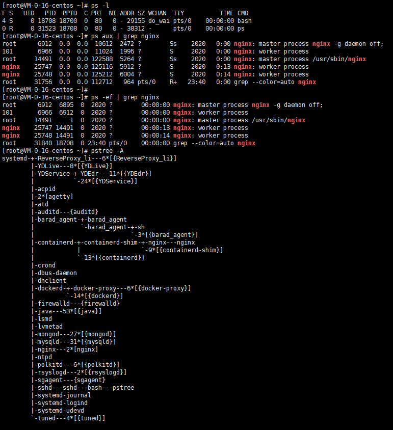
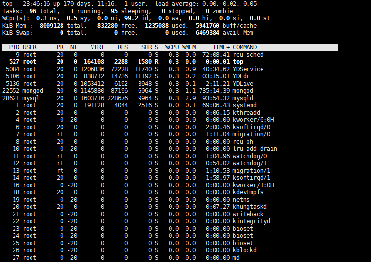

<!DOCTYPE html>
<html>
  <!DOCTYPE html>
<html lang="zh-CN">
<head><meta name="generator" content="Hexo 3.9.0">
  <meta http-equiv="content-type" content="text/html; charset=utf-8">
  <meta http-equiv="X-UA-Compatible" content="IE=Edge,chrome=1">
  
  <title>Java开发常用的Linux命令 - zgshen&#39;s note</title>
  <meta name="viewport" content="width=device-width, initial-scale=1.0, maximum-scale=1.0, user-scalable=0">
  
  <meta name="keywords" content="Linux">
  
  
    <link rel="shortcut icon" type="image/x-icon" href="/favicon.ico?v=1.02">
  
  
    <link rel="alternate" href="/atom.xml " title="zgshen&#39;s note" type="application/atom+xml">
  

  <link rel="stylesheet" href="/css/style.css">
</head></html>
  <body>
    <div class="container">
      <header class="header">
  <div class="blog-title">
    <a href="/" class="logo">zgshen&#39;s note</a>
    <div class="subtitle"></div>
  </div>
  <nav class="navbar">
    <ul class="menu">
      
        <li class="menu-item">
          <a href="/" class="menu-item-link">主页</a>
        </li>
      
        <li class="menu-item">
          <a href="/about" class="menu-item-link">关于</a>
        </li>
      
        <li class="menu-item">
          <a href="https://www.google.com/search?q=site:zguishen.com/" class="menu-item-link">搜索</a>
        </li>
      
    </ul>
  </nav>
</header>
<article class="post">
  <div class="post-title">
    <h1 class="article-title">Java开发常用的Linux命令</h1>
  </div>
   <div class="post-meta">
    <span class="post-time">2021-02-05</span>
  </div>
  <div class="post-content">
    <h2 id="系统信息"><a href="#系统信息" class="headerlink" title="系统信息"></a>系统信息</h2><h3 id="1-uname"><a href="#1-uname" class="headerlink" title="1. uname"></a>1. uname</h3><p>用于查看系统信息<br><figure class="highlight plain"><table><tr><td class="gutter"><pre><span class="line">1</span><br></pre></td><td class="code"><pre><span class="line">uname -a    显示全部信息</span><br></pre></td></tr></table></figure></p>
<h3 id="2-lscpu"><a href="#2-lscpu" class="headerlink" title="2. lscpu"></a>2. lscpu</h3><p>cpu 架构信息</p>
<h2 id="文件和目录操作"><a href="#文件和目录操作" class="headerlink" title="文件和目录操作"></a>文件和目录操作</h2><h3 id="1-ls"><a href="#1-ls" class="headerlink" title="1. ls"></a>1. ls</h3><p>列出文件或者目录的信息，目录的信息就是其中包含的文件。</p>
<figure class="highlight plain"><table><tr><td class="gutter"><pre><span class="line">1</span><br><span class="line">2</span><br><span class="line">3</span><br><span class="line">4</span><br><span class="line">5</span><br></pre></td><td class="code"><pre><span class="line">## ls [-aAdfFhilnrRSt] file|dir</span><br><span class="line">-a ：列出全部的文件</span><br><span class="line">-d ：仅列出目录本身</span><br><span class="line">-l ：以长数据串行列出，包含文件的属性与权限等等数据</span><br><span class="line">-h : 和 -l 一起使用，列出文件同时以合理易读的单位显示文件大小</span><br></pre></td></tr></table></figure>
<h3 id="2-cd"><a href="#2-cd" class="headerlink" title="2. cd"></a>2. cd</h3><p>更换当前目录。<br><figure class="highlight plain"><table><tr><td class="gutter"><pre><span class="line">1</span><br></pre></td><td class="code"><pre><span class="line">cd [相对路径或绝对路径]</span><br></pre></td></tr></table></figure></p>
<h3 id="3-mkdir"><a href="#3-mkdir" class="headerlink" title="3. mkdir"></a>3. mkdir</h3><p>创建目录。<br><figure class="highlight plain"><table><tr><td class="gutter"><pre><span class="line">1</span><br><span class="line">2</span><br><span class="line">3</span><br></pre></td><td class="code"><pre><span class="line">## mkdir [-mp] 目录名称</span><br><span class="line">-m ：配置目录权限</span><br><span class="line">-p ：递归创建目录</span><br></pre></td></tr></table></figure></p>
<h3 id="4-rmdir"><a href="#4-rmdir" class="headerlink" title="4. rmdir"></a>4. rmdir</h3><p>删除目录，目录必须为空。<br><figure class="highlight plain"><table><tr><td class="gutter"><pre><span class="line">1</span><br><span class="line">2</span><br></pre></td><td class="code"><pre><span class="line">rmdir [-p] 目录名称</span><br><span class="line">-p ：递归删除目录</span><br></pre></td></tr></table></figure></p>
<h3 id="5-touch"><a href="#5-touch" class="headerlink" title="5. touch"></a>5. touch</h3><p>更新文件时间或者建立新文件。<br><figure class="highlight plain"><table><tr><td class="gutter"><pre><span class="line">1</span><br><span class="line">2</span><br><span class="line">3</span><br><span class="line">4</span><br><span class="line">5</span><br><span class="line">6</span><br></pre></td><td class="code"><pre><span class="line">## touch [-acdmt] filename</span><br><span class="line">-a ： 更新 atime</span><br><span class="line">-c ： 更新 ctime，若该文件不存在则不建立新文件</span><br><span class="line">-m ： 更新 mtime</span><br><span class="line">-d ： 后面可以接更新日期而不使用当前日期，也可以使用 --date=&quot;日期或时间&quot;</span><br><span class="line">-t ： 后面可以接更新时间而不使用当前时间，格式为[YYYYMMDDhhmm]</span><br></pre></td></tr></table></figure></p>
<h3 id="6-cp"><a href="#6-cp" class="headerlink" title="6. cp"></a>6. cp</h3><p>复制文件。如果源文件有两个以上，则目的文件一定要是目录才行。<br><figure class="highlight plain"><table><tr><td class="gutter"><pre><span class="line">1</span><br><span class="line">2</span><br><span class="line">3</span><br><span class="line">4</span><br><span class="line">5</span><br><span class="line">6</span><br><span class="line">7</span><br><span class="line">8</span><br></pre></td><td class="code"><pre><span class="line">cp [-adfilprsu] source destination</span><br><span class="line">-a ：相当于 -dr --preserve=all</span><br><span class="line">-d ：若来源文件为链接文件，则复制链接文件属性而非文件本身</span><br><span class="line">-i ：若目标文件已经存在时，在覆盖前会先询问</span><br><span class="line">-p ：连同文件的属性一起复制过去</span><br><span class="line">-r ：递归复制</span><br><span class="line">-u ：destination 比 source 旧才更新 destination，或 destination 不存在的情况下才复制</span><br><span class="line">--preserve=all ：除了 -p 的权限相关参数外，还加入 SELinux 的属性, links, xattr 等也复制了</span><br></pre></td></tr></table></figure></p>
<h3 id="7-rm"><a href="#7-rm" class="headerlink" title="7. rm"></a>7. rm</h3><p>删除文件。<br><figure class="highlight plain"><table><tr><td class="gutter"><pre><span class="line">1</span><br><span class="line">2</span><br></pre></td><td class="code"><pre><span class="line">## rm [-fir] 文件或目录</span><br><span class="line">-r ：递归删除</span><br></pre></td></tr></table></figure></p>
<h3 id="8-mv"><a href="#8-mv" class="headerlink" title="8. mv"></a>8. mv</h3><p>移动文件。<br><figure class="highlight plain"><table><tr><td class="gutter"><pre><span class="line">1</span><br><span class="line">2</span><br><span class="line">3</span><br></pre></td><td class="code"><pre><span class="line">## mv [-fiu] source destination</span><br><span class="line">## mv [options] source1 source2 source3 .... directory</span><br><span class="line">-f ： force 强制的意思，如果目标文件已经存在，不会询问而直接覆盖</span><br></pre></td></tr></table></figure></p>
<h2 id="查看文件内容"><a href="#查看文件内容" class="headerlink" title="查看文件内容"></a>查看文件内容</h2><h3 id="1-cat"><a href="#1-cat" class="headerlink" title="1. cat"></a>1. cat</h3><p>取得文件内容。<br><figure class="highlight plain"><table><tr><td class="gutter"><pre><span class="line">1</span><br><span class="line">2</span><br></pre></td><td class="code"><pre><span class="line">## cat [-AbEnTv] filename</span><br><span class="line">-n ：打印出行号，连同空白行也会有行号，-b 不会</span><br></pre></td></tr></table></figure></p>
<h3 id="2-tac"><a href="#2-tac" class="headerlink" title="2. tac"></a>2. tac</h3><p>是 cat 的反向操作，从最后一行开始打印。</p>
<h3 id="3-more"><a href="#3-more" class="headerlink" title="3. more"></a>3. more</h3><p>和 cat 不同的是它可以一页一页查看文件内容，比较适合大文件的查看。</p>
<h3 id="4-less"><a href="#4-less" class="headerlink" title="4. less"></a>4. less</h3><p>和 more 类似，但是多了一个向前翻页的功能。</p>
<h3 id="5-head"><a href="#5-head" class="headerlink" title="5. head"></a>5. head</h3><p>取得文件前几行。<br><figure class="highlight plain"><table><tr><td class="gutter"><pre><span class="line">1</span><br><span class="line">2</span><br></pre></td><td class="code"><pre><span class="line">## head [-n number] filename</span><br><span class="line">-n ：后面接数字，代表显示几行的意思</span><br></pre></td></tr></table></figure></p>
<h3 id="6-tail"><a href="#6-tail" class="headerlink" title="6. tail"></a>6. tail</h3><p>是 head 的反向操作，只是取得是后几行。<br>常用：<br><figure class="highlight bash"><table><tr><td class="gutter"><pre><span class="line">1</span><br><span class="line">2</span><br></pre></td><td class="code"><pre><span class="line">tail -f xx  <span class="comment">#实时查看</span></span><br><span class="line">tail -100f xx  <span class="comment">#实时查看最后的一百行</span></span><br></pre></td></tr></table></figure></p>
<h3 id="7-od"><a href="#7-od" class="headerlink" title="7. od"></a>7. od</h3><p>以字符或者十六进制的形式显示二进制文件。</p>
<h2 id="用户和用户组"><a href="#用户和用户组" class="headerlink" title="用户和用户组"></a>用户和用户组</h2><h3 id="用户"><a href="#用户" class="headerlink" title="用户"></a>用户</h3><p>添加新的用户账号使用 useradd 命令，删除使用 userdel 命令，修改使用 usermod 命令<br><figure class="highlight bash"><table><tr><td class="gutter"><pre><span class="line">1</span><br><span class="line">2</span><br></pre></td><td class="code"><pre><span class="line">useradd 选项 用户名</span><br><span class="line">useradd mysql -g mysql <span class="comment">#添加 mysql 用户归属 mysql 用户组</span></span><br></pre></td></tr></table></figure></p>
<figure class="highlight bash"><table><tr><td class="gutter"><pre><span class="line">1</span><br><span class="line">2</span><br></pre></td><td class="code"><pre><span class="line">userdel 选项 </span><br><span class="line">userdel -r sam  <span class="comment">#-r的作用是把用户的主目录一起删除</span></span><br></pre></td></tr></table></figure>
<p>此命令删除用户sam在系统文件中（主要是/etc/passwd, /etc/shadow, /etc/group等）的记录，同时删除用户的主目录</p>
<figure class="highlight bash"><table><tr><td class="gutter"><pre><span class="line">1</span><br><span class="line">2</span><br></pre></td><td class="code"><pre><span class="line">usermod 选项 用户名</span><br><span class="line">usermod -s /bin/ksh -d /home/z –g developer sam</span><br></pre></td></tr></table></figure>
<p>此命令将用户sam的登录Shell修改为ksh，主目录改为/home/z，用户组改为developer</p>
<h3 id="用户组"><a href="#用户组" class="headerlink" title="用户组"></a>用户组</h3><p>增加用户组<br><figure class="highlight plain"><table><tr><td class="gutter"><pre><span class="line">1</span><br></pre></td><td class="code"><pre><span class="line">groupadd 选项 用户组</span><br></pre></td></tr></table></figure></p>
<p>删除用户组<br><figure class="highlight plain"><table><tr><td class="gutter"><pre><span class="line">1</span><br></pre></td><td class="code"><pre><span class="line">groupdel 用户组</span><br></pre></td></tr></table></figure></p>
<p>修改用户组<br><figure class="highlight plain"><table><tr><td class="gutter"><pre><span class="line">1</span><br></pre></td><td class="code"><pre><span class="line">groupmod 选项 用户组</span><br></pre></td></tr></table></figure></p>
<h2 id="权限操作"><a href="#权限操作" class="headerlink" title="权限操作"></a>权限操作</h2><p>chmod ［who］ ［+ | - | =］ ［mode］ 文件名<br>命令中各选项的含义为：<br>操作对象who可是下述字母中的任一个或者它们的组合：<br><figure class="highlight plain"><table><tr><td class="gutter"><pre><span class="line">1</span><br><span class="line">2</span><br><span class="line">3</span><br><span class="line">4</span><br></pre></td><td class="code"><pre><span class="line">u 表示“用户（user）”，即文件或目录的所有者。</span><br><span class="line">g 表示“同组（group）用户”，即与文件属主有相同组ID的所有用户。</span><br><span class="line">o 表示“其他（others）用户”。</span><br><span class="line">a 表示“所有（all）用户”。它是系统默认值。</span><br></pre></td></tr></table></figure></p>
<p>操作符号可以是：<br><figure class="highlight plain"><table><tr><td class="gutter"><pre><span class="line">1</span><br><span class="line">2</span><br><span class="line">3</span><br></pre></td><td class="code"><pre><span class="line">+ 添加某个权限。</span><br><span class="line">- 取消某个权限。</span><br><span class="line">= 赋予给定权限并取消其他所有权限（如果有的话）。</span><br></pre></td></tr></table></figure></p>
<p>设置mode所表示的权限可用下述字母的任意组合：<br><figure class="highlight plain"><table><tr><td class="gutter"><pre><span class="line">1</span><br><span class="line">2</span><br><span class="line">3</span><br><span class="line">4</span><br><span class="line">5</span><br><span class="line">6</span><br><span class="line">7</span><br><span class="line">8</span><br><span class="line">9</span><br></pre></td><td class="code"><pre><span class="line">r 可读。</span><br><span class="line">w 可写。</span><br><span class="line">x 可执行。</span><br><span class="line">X 只有目标文件对某些用户是可执行的或该目标文件是目录时才追加x 属性。</span><br><span class="line">s 在文件执行时把进程的属主或组ID置为该文件的文件属主。方式“u＋s”设置文件的用户ID位，“g＋s”设置组ID位。</span><br><span class="line">t 保存程序的文本到交换设备上。</span><br><span class="line">u 与文件属主拥有一样的权限。</span><br><span class="line">g 与和文件属主同组的用户拥有一样的权限。</span><br><span class="line">o 与其他用户拥有一样的权限。</span><br></pre></td></tr></table></figure></p>
<p>可以将一组权限用数字来表示，此时一组权限的 3 个位当做二进制数字的位，从左到右每个位的权值为 4、2、1，即每个权限对应的数字权值为 r : 4、w : 2、x : 1。</p>
<p>示例：<br>ls -l 命令 查看文件显示<br><figure class="highlight bash"><table><tr><td class="gutter"><pre><span class="line">1</span><br><span class="line">2</span><br></pre></td><td class="code"><pre><span class="line">drw-rw-rw- 4 root root 4096 Dec  3 06:05 SSR-Bash-Python</span><br><span class="line">-rw-r--r-- 1 root root   22 Jan 11 22:38 test.txt</span><br></pre></td></tr></table></figure></p>
<p>前面的  drw-rw-rw- 之类  ，第一位含义：<br>普通文件的文件权限第一个字符为“-”<br>目录文件的文件权限第一个字符为“d”<br>字符设备文件的文件权限第一个字符为“c”<br>块设备文件的文件权限第一个字符为“b”<br>符号链接文件的文件权限第一个字符为“s”</p>
<p>后面九位为三个用户组的权限，每个用户组三位，读、写、执行权限为 rwx ，没哪个则哪个为 - ，如 r– 为只读，没有写和执行权限。<br>添加权限方式<br>1、 chmod a+w filename   为所有用户给filename文件增加写(w)权限<br>2、chmod 777 filename  所用用户拥有filename的所有权限</p>
<h2 id="搜索"><a href="#搜索" class="headerlink" title="搜索"></a>搜索</h2><h3 id="1-which"><a href="#1-which" class="headerlink" title="1. which"></a>1. which</h3><p>指令搜索。<br><figure class="highlight plain"><table><tr><td class="gutter"><pre><span class="line">1</span><br><span class="line">2</span><br></pre></td><td class="code"><pre><span class="line">## which [-a] command</span><br><span class="line">-a ：将所有指令列出，而不是只列第一个</span><br></pre></td></tr></table></figure></p>
<h3 id="2-whereis"><a href="#2-whereis" class="headerlink" title="2. whereis"></a>2. whereis</h3><p>文件搜索。速度比较快，因为它只搜索几个特定的目录。<br><figure class="highlight plain"><table><tr><td class="gutter"><pre><span class="line">1</span><br></pre></td><td class="code"><pre><span class="line">## whereis [-bmsu] dirname/filename</span><br></pre></td></tr></table></figure></p>
<h3 id="3-locate"><a href="#3-locate" class="headerlink" title="3. locate"></a>3. locate</h3><p>文件搜索。可以用关键字或者正则表达式进行搜索。</p>
<h2 id="压缩和打包"><a href="#压缩和打包" class="headerlink" title="压缩和打包"></a>压缩和打包</h2><h3 id="压缩文件名"><a href="#压缩文件名" class="headerlink" title="压缩文件名"></a>压缩文件名</h3><p>Linux 底下有很多压缩文件名，常见的如下：</p>
<table>
<thead>
<tr>
<th>扩展名</th>
<th>压缩程序</th>
</tr>
</thead>
<tbody>
<tr>
<td>*.Z</td>
<td>compress</td>
</tr>
<tr>
<td>*.zip</td>
<td>zip</td>
</tr>
<tr>
<td>*.gz</td>
<td>gzip</td>
</tr>
<tr>
<td>*.bz2</td>
<td>bzip2</td>
</tr>
<tr>
<td>*.xz</td>
<td>xz</td>
</tr>
<tr>
<td>*.tar</td>
<td>tar 程序打包的数据，没有经过压缩</td>
</tr>
<tr>
<td>*.tar.gz</td>
<td>tar 程序打包的文件，经过 gzip 的压缩</td>
</tr>
<tr>
<td>*.tar.bz2</td>
<td>tar 程序打包的文件，经过 bzip2 的压缩</td>
</tr>
<tr>
<td>*.tar.xz</td>
<td>tar 程序打包的文件，经过 xz 的压缩</td>
</tr>
</tbody>
</table>
<h3 id="压缩指令"><a href="#压缩指令" class="headerlink" title="压缩指令"></a>压缩指令</h3><h3 id="1-gzip"><a href="#1-gzip" class="headerlink" title="1. gzip"></a>1. gzip</h3><p>gzip 是 Linux 使用最广的压缩指令，可以解开 compress、zip 与 gzip 所压缩的文件。<br>经过 gzip 压缩过，源文件就不存在了。<br>有 9 个不同的压缩等级可以使用。<br>可以使用 zcat、zmore、zless 来读取压缩文件的内容。<br><figure class="highlight plain"><table><tr><td class="gutter"><pre><span class="line">1</span><br><span class="line">2</span><br><span class="line">3</span><br><span class="line">4</span><br><span class="line">5</span><br><span class="line">6</span><br></pre></td><td class="code"><pre><span class="line">$ gzip [-cdtv#] filename</span><br><span class="line">-c ：将压缩的数据输出到屏幕上</span><br><span class="line">-d ：解压缩</span><br><span class="line">-t ：检验压缩文件是否出错</span><br><span class="line">-v ：显示压缩比等信息</span><br><span class="line">-# ： # 为数字的意思，代表压缩等级，数字越大压缩比越高，默认为 6</span><br></pre></td></tr></table></figure></p>
<h3 id="2-bzip2"><a href="#2-bzip2" class="headerlink" title="2. bzip2"></a>2. bzip2</h3><p>提供比 gzip 更高的压缩比。<br>查看命令：bzcat、bzmore、bzless、bzgrep。<br><figure class="highlight plain"><table><tr><td class="gutter"><pre><span class="line">1</span><br><span class="line">2</span><br></pre></td><td class="code"><pre><span class="line">$ bzip2 [-cdkzv#] filename</span><br><span class="line">-k ：保留源文件</span><br></pre></td></tr></table></figure></p>
<h3 id="3-xz"><a href="#3-xz" class="headerlink" title="3. xz"></a>3. xz</h3><p>提供比 bzip2 更佳的压缩比。<br>可以看到，gzip、bzip2、xz 的压缩比不断优化。不过要注意的是，压缩比越高，压缩的时间也越长。<br>查看命令：xzcat、xzmore、xzless、xzgrep。<br><figure class="highlight plain"><table><tr><td class="gutter"><pre><span class="line">1</span><br></pre></td><td class="code"><pre><span class="line">$ xz [-dtlkc#] filename</span><br></pre></td></tr></table></figure></p>
<h3 id="打包"><a href="#打包" class="headerlink" title="打包"></a>打包</h3><p>压缩指令只能对一个文件进行压缩，而打包能够将多个文件打包成一个大文件。tar 不仅可以用于打包，也可以使用 gzip、bzip2、xz 将打包文件进行压缩。<br><figure class="highlight plain"><table><tr><td class="gutter"><pre><span class="line">1</span><br><span class="line">2</span><br><span class="line">3</span><br><span class="line">4</span><br><span class="line">5</span><br><span class="line">6</span><br><span class="line">7</span><br><span class="line">8</span><br><span class="line">9</span><br><span class="line">10</span><br><span class="line">11</span><br><span class="line">12</span><br></pre></td><td class="code"><pre><span class="line">$ tar [-z|-j|-J] [cv] [-f 新建的 tar 文件] filename...  ==打包压缩</span><br><span class="line">$ tar [-z|-j|-J] [tv] [-f 已有的 tar 文件]              ==查看</span><br><span class="line">$ tar [-z|-j|-J] [xv] [-f 已有的 tar 文件] [-C 目录]    ==解压缩</span><br><span class="line">-z ：使用 zip；</span><br><span class="line">-j ：使用 bzip2；</span><br><span class="line">-J ：使用 xz；</span><br><span class="line">-c ：新建打包文件；</span><br><span class="line">-t ：查看打包文件里面有哪些文件；</span><br><span class="line">-x ：解打包或解压缩的功能；</span><br><span class="line">-v ：在压缩/解压缩的过程中，显示正在处理的文件名；</span><br><span class="line">-f : filename：要处理的文件；</span><br><span class="line">-C 目录 ： 在特定目录解压缩。</span><br></pre></td></tr></table></figure></p>
<table>
<thead>
<tr>
<th>使用方式</th>
<th>命令</th>
</tr>
</thead>
<tbody>
<tr>
<td>打包压缩</td>
<td>tar -jcv -f filename.tar.bz2 要被压缩的文件或目录名称</td>
</tr>
<tr>
<td>查看</td>
<td>tar -jtv -f filename.tar.bz2</td>
</tr>
<tr>
<td>解压缩</td>
<td>tar -jxv -f filename.tar.bz2 -C 要解压缩的目录</td>
</tr>
</tbody>
</table>
<h2 id="防火墙"><a href="#防火墙" class="headerlink" title="防火墙"></a>防火墙</h2><h3 id="iptables"><a href="#iptables" class="headerlink" title="iptables"></a>iptables</h3><figure class="highlight plain"><table><tr><td class="gutter"><pre><span class="line">1</span><br><span class="line">2</span><br></pre></td><td class="code"><pre><span class="line">开启： chkconfig iptables on  </span><br><span class="line">关闭： chkconfig iptables off</span><br></pre></td></tr></table></figure>
<p>即时生效，重启后失效<br><figure class="highlight plain"><table><tr><td class="gutter"><pre><span class="line">1</span><br><span class="line">2</span><br><span class="line">3</span><br></pre></td><td class="code"><pre><span class="line">开启： service iptables start   </span><br><span class="line">关闭： service iptables stop   </span><br><span class="line">状态 service iptables status</span><br></pre></td></tr></table></figure></p>
<h3 id="firewalld"><a href="#firewalld" class="headerlink" title="firewalld"></a>firewalld</h3><figure class="highlight plain"><table><tr><td class="gutter"><pre><span class="line">1</span><br><span class="line">2</span><br><span class="line">3</span><br><span class="line">4</span><br><span class="line">5</span><br></pre></td><td class="code"><pre><span class="line">service firewalld status; #查看防火墙状态</span><br><span class="line">service firewalld start;  或者 #systemctl start firewalld.service;#开启防火墙</span><br><span class="line">service firewalld stop;  或者 #systemctl stop firewalld.service;#关闭防火墙</span><br><span class="line">service firewalld restart;  或者 #systemctl restart firewalld.service;  #重启防火墙</span><br><span class="line">systemctl disable firewalld.service#禁止防火墙开启自启</span><br></pre></td></tr></table></figure>
<h2 id="vi-vim-基本操作"><a href="#vi-vim-基本操作" class="headerlink" title="vi/vim 基本操作"></a>vi/vim 基本操作</h2><h3 id="vi与vim两者区别"><a href="#vi与vim两者区别" class="headerlink" title="vi与vim两者区别"></a>vi与vim两者区别</h3><p>它们都是多模式编辑器，不同的是vim 是vi的升级版本，它不仅兼容vi的所有指令，而且还有一些新的特性在里面。<br>vim的这些优势主要体现在以下几个方面：<br>1.多级撤消<br>我们知道在vi里，按 u只能撤消上次命令，而在vim里可以无限制的撤消。<br>2.易用性<br>vi只能运行于unix中，而vim不仅可以运行于unix,windows ,mac等多操作平台。<br>3.语法加亮<br>vim可以用不同的颜色来加亮你的代码。<br>4.可视化操作<br>就是说vim不仅可以在终端运行，也可以运行于x window、 mac os、 windows。<br>5.对vi的完全兼容<br>某些情况下，你可以把vim当成vi来使用</p>
<h3 id="使用-vi-文件名-或者-vim-文件名-打开文件"><a href="#使用-vi-文件名-或者-vim-文件名-打开文件" class="headerlink" title="使用 vi  文件名  或者  vim 文件名   打开文件"></a>使用 vi  文件名  或者  vim 文件名   打开文件</h3><p>按i进入编辑<br>按esc退出编辑<br>打开状态操作：<br><figure class="highlight plain"><table><tr><td class="gutter"><pre><span class="line">1</span><br><span class="line">2</span><br><span class="line">3</span><br><span class="line">4</span><br><span class="line">5</span><br><span class="line">6</span><br><span class="line">7</span><br><span class="line">8</span><br><span class="line">9</span><br><span class="line">10</span><br></pre></td><td class="code"><pre><span class="line">u   撤销上一步操作</span><br><span class="line">ctrl+r   恢复上一步被撤销的操作</span><br><span class="line">/字符串    搜索字符串</span><br><span class="line">:%s/aa/bb    把aa替换成bb</span><br><span class="line">编辑状态操作：</span><br><span class="line">:w   保存</span><br><span class="line">:q   退出，有提示</span><br><span class="line">:q!   强制退出</span><br><span class="line">:wq   保存退出（强制写入文件并退出）</span><br><span class="line">:x   保存退出（有修改时才写入文件并退出）</span><br></pre></td></tr></table></figure></p>
<p>按esc回到打开状态</p>
<p>其他操作<br><figure class="highlight plain"><table><tr><td class="gutter"><pre><span class="line">1</span><br><span class="line">2</span><br><span class="line">3</span><br><span class="line">4</span><br><span class="line">5</span><br><span class="line">6</span><br></pre></td><td class="code"><pre><span class="line">gg  回到顶端</span><br><span class="line">G  到底端</span><br><span class="line">u  撤销  </span><br><span class="line">ctrl+r  恢复上一步被撤销的操作</span><br><span class="line">ctrl+b 向上翻页</span><br><span class="line">ctrl+f  向下翻页</span><br></pre></td></tr></table></figure></p>
<h3 id="vi操作异常中断"><a href="#vi操作异常中断" class="headerlink" title="vi操作异常中断"></a>vi操作异常中断</h3><p>提示Found a swap file by the name<br>删除目录下的隐藏文件，恢复操作;<br>ls -a 查看swap隐藏文件，rm 命令删除即可。</p>
<h2 id="进程管理"><a href="#进程管理" class="headerlink" title="进程管理"></a>进程管理</h2><h3 id="1-ps"><a href="#1-ps" class="headerlink" title="1.ps"></a>1.ps</h3><figure class="highlight plain"><table><tr><td class="gutter"><pre><span class="line">1</span><br><span class="line">2</span><br><span class="line">3</span><br><span class="line">4</span><br><span class="line">5</span><br></pre></td><td class="code"><pre><span class="line">ps -l # 查看自己的进程</span><br><span class="line">ps aux # 查看系统所有进程</span><br><span class="line">ps aux | grep nginx # 查看特定进程nginx</span><br><span class="line">ps -ef | grep nginx # 同上</span><br><span class="line">pstree -A # 查看进程树</span><br></pre></td></tr></table></figure>
<p></p>
<p>2.top<br><br><strong>第一行，任务队列信息，同 uptime 命令的执行结果</strong></p>
<p>系统时间：23:46:16<br>运行时间：up 179 days, 11:16,<br>当前登录用户： 1 users<br>负载均衡(uptime) load average: 0.00, 0.02, 0.05</p>
<p>average后面的三个数分别是1分钟、5分钟、15分钟的负载情况。<br>load average数据是每隔5秒钟检查一次活跃的进程数，然后按特定算法计算出的数值。如果这个数除以逻辑CPU的数量，结果高于5的时候就表明系统在超负荷运转了</p>
<p><strong>第二行，Tasks — 任务（进程）</strong><br>总进程:96 total, 运行:1 running, 休眠:95 sleeping, 停止: 0 stopped, 僵尸进程: 0 zombie</p>
<p><strong>第三行，cpu状态信息</strong><br>0.3%us【user space】— 用户空间占用CPU的百分比<br>0.5%sy【sysctl】— 内核空间占用CPU的百分比<br>0.0%ni【】— 改变过优先级的进程占用CPU的百分比<br>99.2%id【idolt】— 空闲CPU百分比<br>0.0%wa【wait】— IO等待占用CPU的百分比<br>0.0%hi【Hardware IRQ】— 硬中断占用CPU的百分比<br>0.0%si【Software Interrupts】— 软中断占用CPU的百分比  </p>
<p><strong>第四行,内存状态</strong><br>8009128 total,   832280 free,  1235088 used,  5941760 buff/cache【buffers缓存的内存量】</p>
<p><strong>第五行，swap交换分区信息</strong><br>0 total,  0 free,  0 used.  6469384 avail Mem【cached缓冲的交换区总量】</p>
<p>备注：<br>可用内存=free + buffer + cached对于内存监控，在top里我们要时刻监控第五行swap交换分区的used，如果这个数值在不断的变化，说明内核在不断进行内存和swap的数据交换，这是真正的内存不够用了。第四行中使用中的内存总量（used）指的是现在系统内核控制的内存数，第四行中空闲内存总量（free）是内核还未纳入其管控范围的数量。纳入内核管理的内存不见得都在使用中，还包括过去使用过的现在可以被重复利用的内存，内核并不把这些可被重新使用的内存交还到free中去，因此在linux上free内存会越来越少，但不用为此担心。</p>
<h2 id="参考"><a href="#参考" class="headerlink" title="参考"></a>参考</h2><ul>
<li>[1] <a href="https://reid.run/archives/linux1#toc-head-45" target="_blank" rel="noopener">Linux基本概念及常用命令实现汇总</a></li>
<li>[2] <a href="https://www.runoob.com/linux/linux-command-manual.html" target="_blank" rel="noopener">Linux 命令大全</a></li>
<li>[3] <a href="http://linux.vbird.org/" target="_blank" rel="noopener">鸟哥的 Linux 私房菜</a></li>
</ul>

  </div>
  <div class="post-footer">
    
      <ul class="post-tag-list"><li class="post-tag-list-item"><a class="post-tag-list-link" href="/tags/Linux/">Linux</a></li></ul>
    

    <a href="#top" class="top">返回顶部</a>
  </div>
</article>
<footer>
  &copy; 2021
  <span class="author">
    zguishen
  </span>
</footer>
    </div>
	<script async src="https://www.googletagmanager.com/gtag/js?id=GA_MEASUREMENT_ID"></script>
	<script>
	  window.dataLayer = window.dataLayer || [];
	  function gtag(){dataLayer.push(arguments);}
	  gtag('js', new Date());
	  gtag('config', 'UA-106347761-1');
	</script>
  </body>
</html>